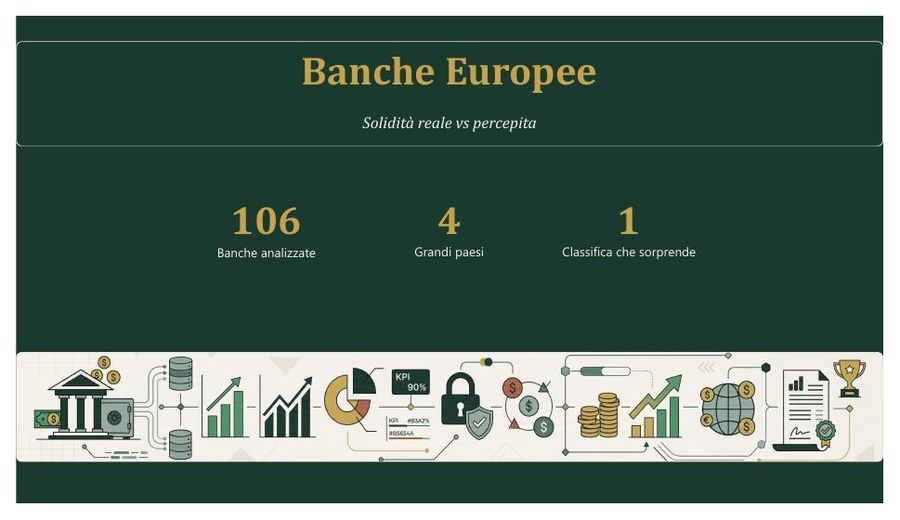

PROGETTO PRINCIPALE
Indice di robustezza delle banche europee
Indice composito di robustezza su 106 banche commerciali, dai dati ufficiali EBA 2024. Schema e viste SQL, analisi di sensibilità e correlazioni di Spearman in Python, dashboard Power BI di 11 pagine con nota metodologica.
MySQLPython / SciPyPower BI
Apri il progetto